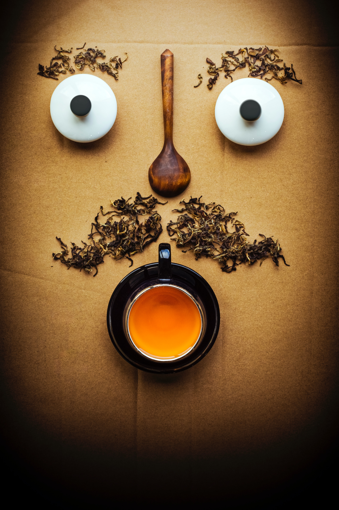
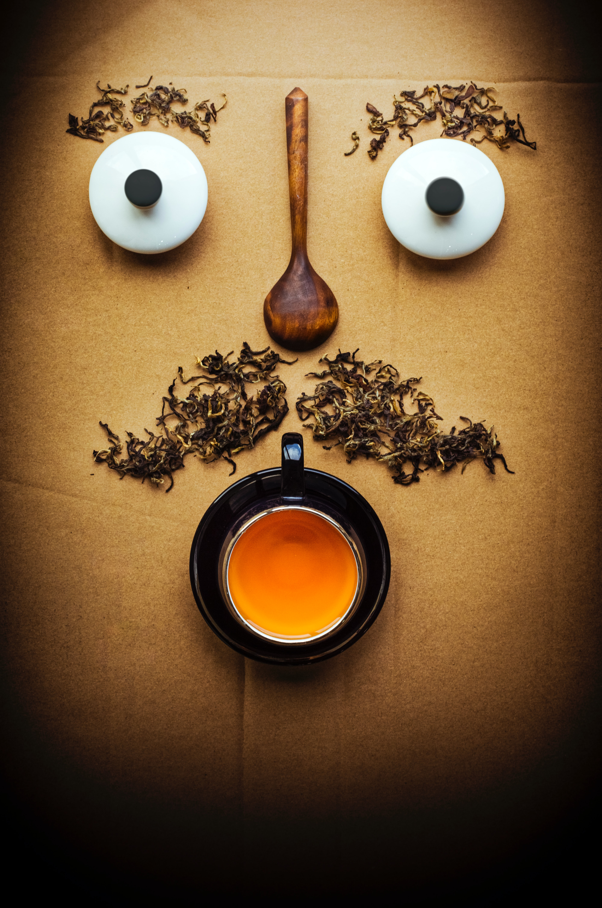

Vind et års forbrug af Medova te!
Har du talent for fotografi? Tag dit bedste billede af din morgente, find den perfekte vinkel på tehygge med dine venner eller find på din egen finurlige opsætning af dit te arsenal. Vi søger det bedste te billede og belønner dette med et års forbrug af Medova te til 5 heldige vindere!
De bedste billeder bliver vist på instagram, facebook og twitter. Hvis du har lyst til at deltage så klik på konkurrence feltet nederst på siden
Medova te blev lanceret for første gang i 1952. Siden har der været et hav af reklamer for teen. Vidste du at medova te var en af de første til at anvende teposer i Danmark?
Se gamle reklamer for Medova her 
